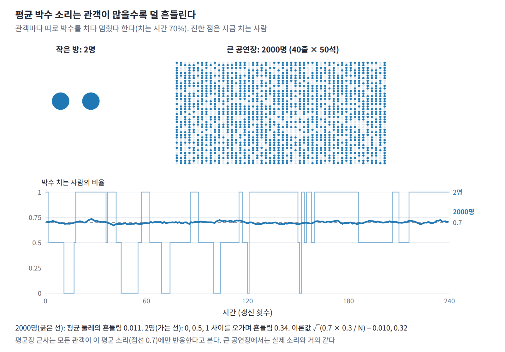
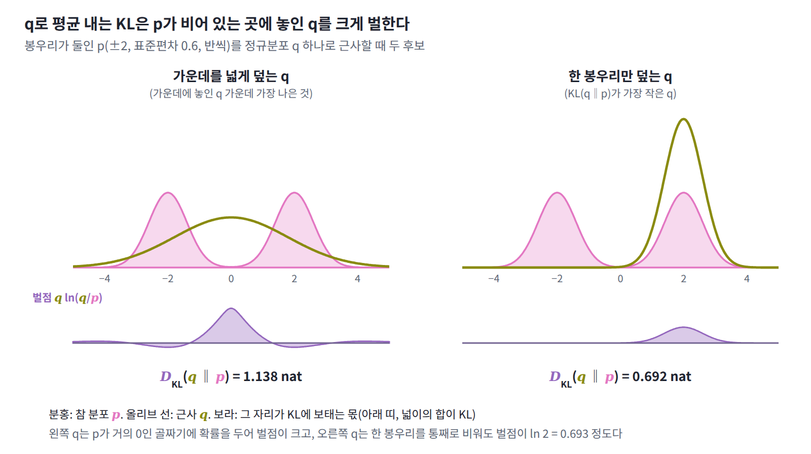

12장 — 평균장 근사
이 장의 물음
VAE의 인코더는 데이터 하나를 받을 때마다 잠재변수의 근사 분포를 내놓는데, 이 분포는 대개 좌표마다 평균과 분산만 따로 정하는 대각 정규분포다. 잠재변수 두 개의 사후분포가 평균 (1, −1), 분산 1, 상관계수 0.9인 정규분포라고 하고, 대각 정규분포 가운데 ELBO가 가장 큰 것을 찾아보자. 평균은 (1, −1)로 정확히 찾아가지만 각 좌표의 표준편차는 1이 아니라 0.436으로 나온다. 근사 분포가 참 사후분포보다 두 배 넘게 좁으니, 모델은 자기 잠재변수를 실제보다 훨씬 확신하는 셈이다. ELBO는 로그우도보다 0.830 nat 아래에서 멈추고 더 올라가지 않는다. 블라이, 쿠쿠켈비르, 매컬리프는 변분 추론 리뷰(2017)에서 이것을 「변분 추론은 일반적으로 사후분포의 분산을 과소평가한다. 이는 목적 함수에서 비롯된 결과다」라고 적었다.

같은 일이 자석에서는 더 크게 나타난다. 이웃한 스핀끼리 결합 J로 묶인 2차원 정사각 격자에서, 스핀마다 이웃 넷을 제각각 보는 대신 그 넷의 평균 방향에만 반응한다고 두고 계산하면 kT = 3.0J에서 자화가 0.776이라는 답이 나온다. 그러나 이 온도의 정확한 자화는 0이고, 64 × 64 격자를 시뮬레이션해도 0.042밖에 되지 않는다. 이 계산은 자석이 kT = 4J까지 자성을 유지한다고 예측하지만, 실제로 자성이 사라지는 온도는 2.269J다. 두 경우 모두 서로 얽힌 변수들을 독립인 것처럼 다룬 근사가 한쪽으로만 틀렸다. 근사한 사후분포는 참 분포보다 좁고, 근사한 자석은 실제보다 더 질서 있다. 왜 하필 그쪽으로 틀리며, 이런 근사는 언제 믿을 수 있을까? 이 장은 이 물음을 다음 순서로 풀어 간다.
- 분배함수를 계산할 수 없을 때, 서로 독립인 변수들로 만든 분포 가운데 무엇을 「가장 나은 것」으로 골라야 할까?
- 그렇게 고른 분포에서 변수 하나는 나머지 변수들을 어떻게 보고 있을까?
- 변수마다 이웃이 많아지면 근사가 나아질까, 나빠질까?
- 근사가 틀릴 때 늘 한쪽으로만, 곧 더 좁고 더 질서 있는 쪽으로 틀리는 까닭은 무엇일까?
- 근사가 버린 두 변수 사이의 관계를 되찾을 길이 있을까?
역사: 분자장에서 변분 추론까지
원자 자석 하나가 나머지 전체의 평균에만 반응한다는 생각은 이징 모형보다 먼저 나왔다. 처음에는 자석의 성질을 설명하는 대담한 가설이었고, 이어서 계산할 수 없는 분포 대신 계산할 수 있는 분포를 고르는 일반 원리로 자리 잡았으며, 1980년대 후반에는 신경망 학습으로 옮겨 갔다.
| 연도 | 사람 | 내용 |
|---|---|---|
| 1907 | 바이스 | 원자 자석들이 자화에 비례하는 가상의 「분자장」을 받는다는 가설로 자발 자화와 퀴리 온도를 설명 |
| 1928 | 하이젠베르크 | 분자장의 기원을 이웃 원자 사이의 양자역학적 교환 상호작용으로 설명 |
| 1934 | 브래그·윌리엄스 | 합금 속 원자 배열의 질서와 무질서를 같은 근사로 계산 |
| 1935 | 베테 | 원자 하나와 그 이웃들을 정확히 다루어 평균장 근사를 개선 |
| 1938 | 파이얼스 | 시험 상태로 어림한 자유에너지가 참 자유에너지보다 작아질 수 없음을 증명 |
| 1987 | 피터슨·앤더슨 | 볼츠만 머신의 확률적 상관 측정을 평균장 방정식의 해로 대체 |
| 1998 | 카펜·로드리게스 | 평균장과 선형 응답으로 볼츠만 머신의 결합을 직접 계산 |
| 1999 | 조던·가라마니·야콜라·솔 | 그래프 모형을 위한 변분 방법을 정리한 입문 논문 |
| 2017 | 블라이·쿠쿠켈비르·매컬리프 | 통계학자를 위한 변분 추론 리뷰 |
철이 퀴리 온도 아래에서 저절로 자석이 되는 까닭을 설명하려고, 프랑스의 물리학자 피에르 바이스는 1907년 논문 「분자장 가설과 강자성」에서 대담한 가정을 했다. 원자 자석들은 서로 독립인데, 다만 자석 전체의 자화에 비례하는 가상의 자기장 속에 함께 놓여 있다는 것이다. 원자 자석 하나가 한 방향을 따르는 정도는 이 분자장이 정하고, 모든 원자가 그렇게 따른 결과가 다시 자화가 된다. 자화가 자화를 만드는 이 순환에서 두 가지 결론이 나왔다. 어떤 온도 아래에서는 바깥 자기장 없이도 자화가 스스로를 유지하고, 그 온도 위에서는 자화율이 온도와 그 경계 온도의 차이에 반비례한다는 퀴리–바이스 법칙이다. 문제는 분자장이 어디서 오는지였다. 원자 자석 사이의 자기적인 힘으로는 그만한 크기가 나오지 않아 바이스는 기원을 설명하지 못했고, 1928년 하이젠베르크가 양자역학의 교환 상호작용을 찾아내고서야 크기가 맞았다. 1970년 노벨상 강연에서 루이 네엘은 바이스의 설명이 이론적으로 매우 만족스러웠지만 「분자장이 균일하다는 것을 교리처럼 받아들이게 만드는 단점이 있었고, 이것이 이론의 발전을 분명히 늦추었다」고 돌아보았다.


이 가정이 편의를 위한 어림을 넘어 가장 나은 선택이라는 것은 나중에 드러났다. 1938년 파이얼스는 「자유에너지의 최소 성질에 관하여」에서 다루기 쉬운 시험 상태로 어림한 자유에너지가 참 자유에너지보다 작아질 수 없다는 것을 증명했다. 같은 부등식은 뒤에 이를 널리 쓴 보골류보프와 파인만의 이름을 더해 깁스–보골류보프–파인만 부등식이라고도 불린다. 이 부등식 덕분에 근사는 「자유에너지를 가장 낮게 만드는 시험 분포 고르기」라는 최적화 문제가 되었다.
1987년 텍사스 오스틴의 기업 연구소 MCC에 있던 카스텐 피터슨과 제임스 앤더슨은 이 생각을 신경망 학습으로 가져왔다. 볼츠만 머신은 학습 단계마다 모델의 짝 평균을 샘플링으로 재야 해서 무척 느렸는데, 그들은 초록에 「시간이 많이 드는 상관의 확률적 측정을 결정론적 평균장 방정식의 해로 대체한다」고 쓰고, XOR·인코더·선 대칭 문제에서 10~30배 빨라졌다고 보고했다. 본문에서는 짝 평균 ⟨sᵢsⱼ⟩마저 두 평균의 곱 VᵢVⱼ로 한 번 더 근사했다. 30년 뒤 블라이와 동료들은 변분 추론 리뷰에서 이 논문을 「특정한 모형, 곧 신경망에 대한 아마도 첫 변분 절차」로 꼽았다.
작은 문제: 결합된 스핀 둘을 동전 둘로 흉내 내기
위(+1)나 아래(−1)만 향할 수 있는 스핀 두 개가 결합 J로 묶여 있고, 둘 다 같은 편향 b를 받는다고 하자. 에너지는 E = −J s₁s₂ − b(s₁ + s₂)이고 배치는 (위, 위), (위, 아래), (아래, 위), (아래, 아래) 넷뿐이므로, 분배함수는 네 항의 합으로 정확히 계산된다. kT = 1로 두고 βJ = 1, βb = 0.5이면 두 스핀이 모두 위를 향할 확률이 0.810, 모두 아래를 향할 확률이 0.110, 서로 반대일 확률이 0.040씩이고, 각 스핀의 평균 방향은 ⟨s⟩ = 0.700이다.
이제 이 정확한 답을 모른다고 치고, 스핀마다 따로 던지는 동전 두 개로 이 분포를 흉내 내 보자. 첫째 동전은 평균 방향 m₁을 가져서 위가 나올 확률이 (1 + m₁)/2이고, 둘째 동전은 m₂를 가지며, 두 동전은 서로 독립이다. 이렇게 변수마다 따로 정한 분포를 곱해 만든 분포를 곱 분포 (변수들이 서로 독립이 되도록 변수별 분포를 곱한 분포, product distribution)라 한다. 곱 분포는 두 스핀이 함께 움직이는 경향, 곧 상관을 표현하지 못한다. 대신 스핀이 수백 개인 계에서도 평균, 에너지, 엔트로피가 스핀별 계산의 합으로 곧바로 나오므로 언제나 계산할 수 있는 후보가 된다. 문제는 후보들 가운데 어느 것을 고르느냐이다.
참 분포를 모르니 「각 스핀의 평균을 참값에 맞춘다」는 기준은 쓸 수 없다. 곱 분포 q에 대해 계산할 수 있는 것은 q로 낸 평균 에너지와 q의 엔트로피인데, 둘을 온도로 엮은 자유에너지 F[q] = ⟨E⟩_q − kT H(q)는 아무 분포에나 매길 수 있다. 게다가 KL의 정의에 볼츠만 분포의 로그 ln p = −βE − ln Z를 넣으면, F[q]와 참 자유에너지 F = −kT ln Z의 차이가 정확히 kT × D_KL(q‖p)라는 것이 나온다. 그러니 Z를 몰라도 F[q]를 가장 낮추는 q를 찾으면, 그것이 KL로 재어 참 분포에 가장 가까운 곱 분포다. 두 동전이 독립이므로 ⟨s₁s₂⟩_q = m₁m₂이고, F[q]는 다음과 같다.
![위젯 1: 두 스핀의 자유에너지 지도 (βJ = 1, βb = 0.5에서 가장 낮은 F[q]는 (0.881, 0.881), 참 평균 0.700, ln Z = 2.211, 가장 큰 −βF[q] = 2.108, 틈 0.103)](images/ch12/wid_w1.png)
m₁과 m₂를 −1부터 1까지 촘촘한 격자 위에서 바꿔 가며 F[q]가 가장 낮은 곳을 찾으면 다음과 같다. kT = 1이므로 −βF[q]는 ln Z보다 작거나 같고, 그 차이가 KL이다.
| βJ | βb | 정확한 ⟨s⟩ | 가장 나은 곱 분포의 m | ln Z | −βF[q] | 틈 D_KL(q‖p) |
|---|---|---|---|---|---|---|
| 1.0 | 0.5 | 0.700 | 0.881 | 2.211 | 2.108 | 0.103 |
| 1.0 | 0.2 | 0.338 | 0.731 | 1.889 | 1.616 | 0.273 |
| 1.0 | 0 | 0 | 0 | 1.820 | 1.386 | 0.434 |
| 1.5 | 0 | 0 | ±0.859 | 2.242 | 1.617 | 0.625 |
| 3.0 | 0 | 0 | ±0.995 | 3.696 | 3.005 | 0.691 |
세 가지가 눈에 띈다. 첫째, 가장 나은 곱 분포에서는 두 스핀의 평균이 늘 같고, 편향이 있으면 그 값이 참값보다 크다. βb = 0.2에서는 0.338이어야 할 평균을 0.731로 두 배 넘게 잡는다. 둘째, 편향이 없고 βJ = 1이면 곱 분포는 m = 0, 곧 동전 두 개를 제각각 고르게 던지는 분포를 고른다. 참 분포에서 두 스핀이 같은 방향일 확률은 0.881인데 곱 분포에서는 이것이 0.5로 사라지고, 틈은 0.434가 된다. 셋째, βJ = 1.5에서는 참 분포가 위아래를 똑같이 대접해 평균이 0인데도, 곱 분포는 두 스핀이 모두 +0.859를 향하거나 모두 −0.859를 향한다고 답한다. 스핀 두 개짜리 계를 두고 자석이 되었다고 말하는 셈이다. 결합이 강해질수록 틈은 0.691로 커지며 ln 2 = 0.693에 다가간다. 가장 나은 곱 분포는 왜 늘 참 분포보다 한쪽으로 더 쏠리며, 그 m은 어떤 규칙을 따를까?

패턴: 각 스핀은 이웃의 평균만 본다
F[q]를 m₁으로 미분해 0으로 놓으면 가장 나은 곱 분포가 만족하는 조건이 나온다. 엔트로피 항의 도함수가 −kT·artanh m₁이므로 조건은 아래 왼쪽 식이다. 그 곁에는 참 분포에서 정확히 성립하는 식을 두었다. 스핀 2의 방향을 알고 나면 스핀 1은 편향 b + Js₂를 받는 홀로 선 스핀이 되어 평균이 tanh(β(b + Js₂))이고, 이것을 스핀 2의 분포로 평균한 것이 ⟨s₁⟩이다.
두 식의 차이는 평균을 tanh 안에 넣느냐 밖에 두느냐뿐이다. 곱 분포의 스핀 1은 스핀 2를 평균값 m₂에 굳혀 두고, 그 평균이 만드는 편향 b + Jm₂에만 반응한다. 이렇게 다른 변수들을 평균값에 굳혔을 때 한 변수가 받는 편향을 평균장 (나머지 변수들의 평균이 한 변수에 만드는 유효한 편향, mean field)이라 부른다. 반면 참 분포의 스핀 1은 스핀 2가 위를 향할 때의 큰 편향 b + J와 아래를 향할 때의 작은, 때로는 반대 방향인 편향 b − J를 번갈아 받는다. 표의 첫 줄에 숫자를 넣어 보자. 스핀 2가 위를 향할 확률이 0.850이므로 참 평균은 0.850 × tanh(1.5) + 0.150 × tanh(−0.5) = 0.700이다. 그런데 같은 0.700을 tanh 안에 넣으면 tanh(0.5 + 0.700) = 0.834로 이미 더 크다. tanh는 입력이 커질수록 1 근처에서 거의 늘지 않아서, 편향이 커진 쪽에서 얻는 몫이 편향이 작아진 쪽에서 잃는 몫보다 작기 때문이다. 곱 분포에서는 여기에 순환이 더해진다. 부풀려진 m₁이 스핀 2의 평균장을 키우고, 커진 m₂가 다시 m₁을 키우는 되먹임이 m = 0.881에 이르러서야 멈춘다.

편향이 없을 때는 같은 되먹임이 대칭을 깨뜨린다. m₁ = m₂ = m으로 두면 조건은 m = tanh(βJm)이 되는데, βJ가 1보다 작으면 해가 0 하나뿐이지만 1보다 크면 0이 아닌 해 ±0.859(βJ = 1.5)가 생기고 F[q]는 그쪽이 더 낮다. 참 분포의 두 스핀은 「같은 방향이되 위와 아래가 반반」이라는 상관으로 결합 에너지를 얻는다. 곱 분포는 상관을 표현할 수 없으니, 결합 에너지를 얻으려면 한쪽을 골라 두 스핀을 모두 그쪽으로 쏠리게 할 수밖에 없다. βJ = 3에서 참 분포는 (위, 위)와 (아래, 아래)에 0.499씩 나뉘어 있는데, 곱 분포는 그 가운데 하나에 거의 모든 확률을 싣는다. 한 봉우리를 통째로 버렸으니 틈은 「두 봉우리 중 어느 쪽인가」에 해당하는 1비트, 곧 ln 2에 다가간다.
이제 패턴을 정리할 수 있다. 가장 나은 곱 분포에서 각 변수의 분포는 나머지 변수들을 평균값에 굳혀 놓은 볼츠만 분포다. 이웃의 흔들림이 평균 하나로 바뀌므로 각 변수는 실제보다 한결같은 편향을 받고, 그래서 곱 분포는 참 분포보다 한쪽으로 더 쏠린다. 참 분포에 봉우리가 여럿이면 곱 분포는 그중 하나를 고른다.
정의: 평균장 근사
스핀이 둘일 때 찾은 규칙은 스핀이 수백 개인 계에서도 그대로 성립할까? 스핀 N개가 짝마다 결합 Jᵢⱼ, 스핀마다 편향 bᵢ로 묶인 이징 모형 E(s) = −Σ_{i<j} Jᵢⱼsᵢsⱼ − Σᵢbᵢsᵢ에 같은 일을 해 보자. 곱 분포 q(s) = q₁(s₁)q₂(s₂)⋯q_N(s_N)에서는 서로 다른 스핀의 곱의 평균이 평균의 곱이 되므로 ⟨sᵢsⱼ⟩_q = mᵢmⱼ이고, 자유에너지는 평균 방향 mᵢ들만의 함수가 된다. 이것을 mᵢ로 미분해 0으로 놓으면 스핀 둘일 때와 같은 모양의 조건이 스핀마다 하나씩 나온다.
부등식은 F[q] − F = kT × D_KL(q‖p) ≥ 0에서 오고, 양변에 −β를 곱하면 ln Z ≥ −βF[q], 곧 계산할 수 있는 ln Z의 아래쪽 한계가 된다. 이처럼 서로 독립인 변수들의 곱 분포 가운데 F[q]가 가장 낮은 것으로 볼츠만 분포를 대신하는 것을 평균장 근사 (곱 분포 안에서 자유에너지를 최소화해 볼츠만 분포를 대신하는 근사, mean-field approximation)라 한다. 오른쪽 식에서는 구하려는 값 mᵢ가 양변에 모두 들어 있어서, 답은 이 식에 넣었을 때 스스로와 맞아떨어지는 값이어야 한다. 그래서 이런 식을 자기 일관 방정식(self-consistent equation)이라 부른다.
공연이 끝난 공연장을 떠올려 보자. 관객 한 사람 한 사람은 박수를 계속 칠지를 실제로는 바로 옆 사람들이 치는지를 보고 정한다. 평균장 근사는 모든 관객이 객석 전체에서 들려오는 박수 소리의 평균 크기에만 반응한다고 보는 것이다. 수천 명의 소리가 섞인 큰 공연장이라면 그 평균은 거의 흔들리지 않아 이 어림이 잘 맞지만, 두 사람만 앉은 작은 방에서는 옆 사람이 박수를 멈추는 순간이 평균과 전혀 다르게 들린다.

일반화: 인자를 하나씩 바꾸는 규칙
그런데 tanh 조건은 변수가 ±1인 스핀이라서 나온 모양이다. 변수가 연속인 값이거나 여러 값을 가질 때, 가장 나은 곱 분포의 인자 하나는 어떤 규칙을 따를까? 목표 분포 p(x) = e^(−βE(x))/Z에 대해 q(x) = Πqᵢ(xᵢ)를 두고, 나머지 인자를 고정한 채 F[q]를 인자 qᵢ 하나에 대해 최소화하면 다음 규칙이 나온다.
이징 모형에서는 나머지 스핀으로 평균 낸 에너지가 sᵢ의 일차식 −(bᵢ + ΣⱼJᵢⱼmⱼ)sᵢ + (sᵢ와 무관한 값)이므로, 이 규칙이 곧 tanh 조건이다. 인자 하나를 이렇게 바꾸는 것은 그 인자에 대한 정확한 최소화라서 F[q]는 한 번 바꿀 때마다 줄거나 그대로이고, 인자들을 하나씩 돌아가며 바꾸면 F[q]가 멈출 때까지 내려간다.
정의: 변분 추론
이 규칙에서 목표 분포 p가 볼츠만 분포일 필요는 없었다. 그렇다면 ML에서 계산할 수 없는 분포, 예를 들어 VAE의 사후분포에도 같은 방법을 쓸 수 있지 않을까? 통계학과 ML에서는 목표 분포가 관측값 x가 주어진 잠재변수 h의 사후분포 p(h | x)이고, 에너지는 온도 1의 −ln p(x, h)이다. 계산할 수 있는 분포의 모임을 정하고 그 안에서 D_KL(q‖p)를 가장 작게, 곧 ELBO = −F[q]를 가장 크게 만드는 q로 사후분포를 대신하는 것을 변분 추론 (근사 분포의 모임 안에서 ELBO를 최대화해 사후분포를 대신하는 방법, variational inference)이라 한다. 모임을 곱 분포로 잡은 것이 평균장 변분 추론이고, 위의 규칙을 인자마다 돌아가며 적용하는 알고리즘을 좌표 상승 변분 추론(coordinate ascent variational inference, CAVI)이라 부른다. 물리의 평균장 근사와 ML의 평균장 변분 추론은 같은 최소화를 서로 다른 이름으로 부르는 것이다.
일반화: 이웃이 많을수록 정확하다
평균장 근사는 언제 믿을 수 있을까? 이 근사가 버리는 것은 평균장의 흔들림이다. 스핀 i가 실제로 받는 편향 bᵢ + ΣⱼJᵢⱼsⱼ는 이웃 스핀들이 뒤집힐 때마다 흔들리는데, 근사는 이것을 평균값 하나로 바꾼다. 그러니 이 편향이 덜 흔들릴수록 근사는 정확하다. 작은 결합 여러 개가 더해진 편향은 큰 수의 법칙에 따라 거의 흔들리지 않고, 큰 결합 몇 개가 더해진 편향은 크게 흔들린다. 공연장의 비유로 말하면 관객이 많을수록 평균 박수 소리가 믿을 만하다.
가장 극단적인 경우는 모든 쌍을 J/N으로 묶은 스핀 N개다. 스핀 하나가 받는 편향은 나머지 N − 1개의 평균 방향에 J를 곱한 것이어서 흔들림이 1/√N로 줄어든다. 모든 스핀의 평균 방향을 m으로 같게 두면 스핀 하나당 −βF[q]는 H((1 + m)/2) + βJm²/2(N이 클 때)이고 자기 일관 방정식은 m = tanh(βJm)이다. 한편 이 모형의 정확한 ln Z는 위를 향한 스핀 수별로 묶어 정확히 셀 수 있으므로 둘을 직접 비교할 수 있다.
| N | βJ = 0.5의 틈 ln Z + βF[q] | 스핀 하나당 | βJ = 1.5의 틈 | 스핀 하나당 |
|---|---|---|---|---|
| 10 | 0.076 | 0.0076 | 0.783 | 0.078 |
| 100 | 0.094 | 0.00094 | 0.756 | 0.0076 |
| 1000 | 0.096 | 0.00010 | 0.748 | 0.00075 |
| 10000 | 0.097 | 0.00001 | 0.747 | 0.00007 |
틈 전체는 N을 키워도 줄지 않고 βJ = 0.5에서 0.097, βJ = 1.5에서 0.747 근처에 머물지만, 스핀 하나당으로 나누면 N에 반비례해 0으로 간다. 스핀이 많은 계에서는 스핀 하나당 자유에너지와 평균 방향이 평균장으로 정확히 나온다는 뜻이다. βJ = 1.5에서 남는 0.747의 대부분은 ln 2 = 0.693, 곧 곱 분포가 두 봉우리 가운데 하나를 버린 몫이다.
일반화: 평균장이 틀리는 방향
그렇다면 이웃이 몇 개로 정해진 결합에서는 평균장이 얼마나, 그리고 어느 쪽으로 틀릴까? 정사각 격자를 d차원으로 넓힌 격자의 스핀은 이웃이 2d개이므로 평균장은 2dJm이고, 자기 일관 방정식 m = tanh(2dβJm)은 kT = 2dJ 아래에서 0이 아닌 해를 갖는다. 이것을 정확한 임계 온도와 나란히 놓으면 다음과 같다.
| 결합 | 스핀 하나의 이웃 수 | 평균장의 임계 온도 | 정확한 임계 온도 |
|---|---|---|---|
| 1차원 사슬 | 2 | kT = 2J | 없음 |
| 2차원 정사각 격자 | 4 | kT = 4J | kT = 2.269J |
| 3차원 입방 격자 | 6 | kT = 6J | kT ≈ 4.51J (시뮬레이션) |
| 모든 쌍을 J/N으로 | N − 1 | kT = J | kT = J (N이 클 때) |
평균장의 임계 온도는 언제나 정확한 값보다 높고, 이웃이 많을수록 그 비가 1에 가까워진다. 이것이 평균장이 틀리는 방향이다. 평균장은 이웃이 반대로 돌아서는 순간들을 보지 못하므로, 실제로는 질서가 이미 흩어진 온도에서도 질서가 남아 있다고 답한다. 2차원 격자에서 kT = 2.0J이면 평균장의 자화가 0.958, 정확한 자화가 0.911로 둘이 가깝지만, kT = 3.0J에서는 평균장이 0.776을 내놓는 동안 정확한 자화는 0이다. 스핀 하나당 ln Z의 틈도 kT = 2.0J에서 0.006이다가 두 임계 온도 사이인 kT = 3.5J 근처에서 0.075로 가장 커지고, 더 높은 온도에서는 다시 줄어든다. 스핀들이 서로 강하게 얽혀 함께 흔들리는 임계 온도 근처가 평균장이 가장 크게 틀리는 곳이다.

일반화: KL을 q 쪽에서 재는 대가
질서 쪽으로 틀리는 것은 자석만의 사정일까? 첫머리의 정규분포 사후분포에는 격자도 이웃도 없는데 근사는 참 분포보다 좁아졌다. 틀리는 방향은 목적 함수의 모양에도 새겨져 있다. F[q] − F = kT × D_KL(q‖p)의 KL은 q로 평균을 낸 ln(q/p)이므로, 참 분포 p가 거의 0인 곳에 q가 확률을 조금이라도 두면 ln(q/p)가 커서 벌점이 크다. 반대로 p가 큰 곳을 q가 비워 두는 것은 q로 평균을 낼 때 그 자리가 거의 들어가지 않아 벌점이 작다. 그래서 q는 참 분포 안쪽의 확실한 곳에 머물며 참 분포보다 좁아지고, 봉우리가 둘이면 하나만 덮는다. 계산할 수 없는 p로 평균을 내야 하는 반대 방향의 KL, D_KL(p‖q)는 처음부터 쓸 수 없었으니, 이 치우침은 계산할 수 있는 기준을 고른 값이다.

보기: 코드
평균장 방정식을 풀고 정확한 값과 비교하기
스핀을 하나씩 골라 mᵢ ← tanh(bᵢ + ΣⱼJᵢⱼmⱼ)로 바꾸는 일을 되풀이하는 함수 하나로 세 가지 계를 푼다. 스핀 두 개는 네 배치를 모두 더해, 모든 쌍을 묶은 스핀 100개는 위를 향한 수로 묶어 정확한 ln Z를 구하고, 32 × 32 격자는 온사거가 구한 무한 격자의 식과 비교한다. 함수가 돌려주는 −βF[q]는 어느 경우에나 ln Z의 하한이어야 한다.
import numpy as np, itertools
from math import lgamma
from scipy.integrate import dblquad
def H2(m): # 평균 방향이 m인 ±1 동전 하나의 엔트로피 (nat)
p = np.clip((1 + m) / 2, 1e-15, 1 - 1e-15)
return -(p * np.log(p) + (1 - p) * np.log(1 - p))
def mean_field(J, b, m0, sweeps=500):
"""곱 분포로 볼츠만 분포를 흉내 낸다 (kT = 1). 스핀을 하나씩 골라
mᵢ ← tanh(bᵢ + Σⱼ Jᵢⱼ mⱼ)로 바꾸면 F[q]가 매번 줄어든다. −βF[q] = ln Z의 하한도 돌려준다."""
m = m0.astype(float).copy()
for _ in range(sweeps):
for i in range(len(m)):
m[i] = np.tanh(b[i] + J[i] @ m)
bound = 0.5 * m @ J @ m + b @ m + H2(m).sum() # −βF[q] = −β⟨E⟩_q + H(q)
return m, bound
# (1) 두 스핀: βJ = 1, βb = 0.5. 네 배치를 다 더한 정확한 값과 비교
J = np.array([[0, 1.0], [1.0, 0]]); b = np.array([0.5, 0.5])
S = np.array(list(itertools.product([-1, 1], repeat=2)))
logw = 0.5 * np.einsum('si,ij,sj->s', S, J, S) + S @ b
p = np.exp(logw - logw.max()); lnZ = np.log(p.sum()) + logw.max(); p /= p.sum()
m, bound = mean_field(J, b, np.zeros(2))
print(f"두 스핀: 정확한 ⟨s⟩ = {(p @ S)[0]:.4f}, 평균장 m = {m[0]:.4f} | ln Z = {lnZ:.4f}, 하한 = {bound:.4f}")
# (2) 모든 쌍을 J/N으로 묶은 스핀 N = 100개, βJ = 1.5. 위를 향한 수로 묶어 정확히 센다
N, K = 100, 1.5
J = np.full((N, N), K / N); np.fill_diagonal(J, 0)
n = np.arange(N + 1); M = 2 * n - N
logw = np.array([lgamma(N + 1) - lgamma(k + 1) - lgamma(N - k + 1) for k in n]) + K * (M**2 - N) / (2 * N)
lnZ = logw.max() + np.log(np.exp(logw - logw.max()).sum())
m, bound = mean_field(J, np.zeros(N), np.full(N, 0.1))
print(f"완전 연결 N = 100: 평균장 m = {m.mean():.4f} | ln Z = {lnZ:.4f}, 하한 = {bound:.4f}, 틈 = {lnZ - bound:.4f}")
# (3) 32 × 32 정사각 격자 (주기 경계, 이웃 넷). 무한 격자의 정확한 값은 온사거의 식으로
L = 32; idx = np.arange(L * L).reshape(L, L); J1 = np.zeros((L * L, L * L))
for shift in [(0, 1), (1, 0)]:
nb = np.roll(idx, shift, axis=(0, 1)).ravel()
J1[idx.ravel(), nb] = J1[nb, idx.ravel()] = 1.0
def onsager(K): # 스핀 하나당 ln Z (무한 격자)
f = lambda a, c: np.log(np.cosh(2*K)**2 - np.sinh(2*K) * (np.cos(a) + np.cos(c)))
return np.log(2) + dblquad(f, 0, 2*np.pi, 0, 2*np.pi)[0] / (8 * np.pi**2)
def yang(K): # 무한 격자의 정확한 자화 (임계 온도 아래에서만 0이 아님)
s = np.sinh(2 * K); return (1 - s**-4) ** 0.125 if s > 1 else 0.0
for kT in (2.0, 2.4, 3.0, 3.5):
K = 1 / kT
m, bound = mean_field(K * J1, np.zeros(L * L), np.full(L * L, 0.1), sweeps=200)
print(f"격자 kT = {kT}J: 평균장 m = {m.mean():.4f}, 정확한 m = {yang(K):.4f} | "
f"스핀 하나당 ln Z = {onsager(K):.4f}, 하한 = {bound / L**2:.4f}")
# 두 스핀: 정확한 ⟨s⟩ = 0.7002, 평균장 m = 0.8812 | ln Z = 2.2110, 하한 = 2.1083
# 완전 연결 N = 100: 평균장 m = 0.8528 | ln Z = 81.0407, 하한 = 80.2849, 틈 = 0.7557
# 격자 kT = 2.0J: 평균장 m = 0.9575, 정확한 m = 0.9113 | 스핀 하나당 ln Z = 1.0258, 하한 = 1.0197
# 격자 kT = 2.4J: 평균장 m = 0.9073, 정확한 m = 0.0000 | 스핀 하나당 ln Z = 0.8986, 하한 = 0.8736
# 격자 kT = 3.0J: 평균장 m = 0.7755, 정확한 m = 0.0000 | 스핀 하나당 ln Z = 0.8159, 하한 = 0.7521
# 격자 kT = 3.5J: 평균장 m = 0.5811, 정확한 m = 0.0000 | 스핀 하나당 ln Z = 0.7808, 하한 = 0.7062
세 계 모두에서 −βF[q]는 ln Z보다 작고, 평균장의 자화는 정확한 값보다 크다. 격자에서 kT = 2.0J일 때는 자화의 차이가 0.05 남짓이지만, kT = 2.4J에서는 정확한 자화가 0인데도 평균장은 0.907을, 3.5J에서도 0.581을 내놓는다. 모든 쌍을 묶은 스핀 100개의 틈 0.756은 스핀 하나당 0.0076에 불과하다.
![위젯 3: 2차원 격자의 평균장 (kT = 3.0J에서 평균장의 자화 0.776, 정확한 자화 0, 스핀 하나당 ln Z = 0.8159, −βF[q] = 0.7521, 틈 0.0638)](images/ch12/wid_w3.png)
상관된 정규분포를 곱 분포로 근사하기
이 장 첫머리의 사후분포를 좌표 상승 변분 추론으로 근사한다. 정규분포의 곱 분포에서는 규칙 ln qᵢ = ⟨ln p⟩_(나머지) + 상수가 닫힌 식으로 풀려서, 각 인자는 평균이 상대 인자의 평균에 따라 움직이고 분산은 정밀도 행렬(공분산 행렬의 역행렬)의 대각 원소의 역수로 고정된 정규분포가 된다.
import numpy as np
mu = np.array([1.0, -1.0]) # 사후분포 p(h | x) = N(mu, Sigma): 두 잠재변수의 상관계수 0.9
Sigma = np.array([[1.0, 0.9], [0.9, 1.0]])
Lam = np.linalg.inv(Sigma) # 정밀도 행렬 (Sigma의 역행렬)
def kl_gauss(m_q, S_q): # D_KL(q ‖ p) = ln p(x) − ELBO(q)
d = m_q - mu
return 0.5 * (np.trace(Lam @ S_q) + d @ Lam @ d - 2 + np.log(np.linalg.det(Sigma) / np.linalg.det(S_q)))
# 곱 분포 q(h₁)q(h₂): 하나씩 번갈아 ln qᵢ = ⟨ln p⟩_(나머지) + 상수 로 바꾼다 (좌표 상승, CAVI)
m = np.zeros(2); var = 1 / np.diag(Lam) # 각 인자의 분산은 첫 갱신에서 곧바로 1/Λᵢᵢ로 정해진다
for sweep in range(1, 31):
m[0] = mu[0] - Lam[0, 1] / Lam[0, 0] * (m[1] - mu[1])
m[1] = mu[1] - Lam[1, 0] / Lam[1, 1] * (m[0] - mu[0])
if sweep in (1, 5, 10, 30):
print(f"{sweep:2d}번째 훑기: 평균 ({m[0]:.4f}, {m[1]:.4f}), 틈 KL = {kl_gauss(m, np.diag(var)):.4f}")
print(f"곱 분포의 표준편차 {np.sqrt(var[0]):.4f} (참 표준편차 {np.sqrt(Sigma[0, 0]):.4f})")
print(f"상관을 표현할 수 있는 q (완전 공분산)의 틈 = {kl_gauss(mu, Sigma):.4f}")
for rho in (0.5, 0.9, 0.99):
print(f"상관계수 {rho}: 곱 분포의 표준편차 {np.sqrt(1 - rho**2):.3f}, 남는 틈 {-0.5 * np.log(1 - rho**2):.3f} nat, "
f"훑기마다 오차가 {rho**2:.4f}배")
# 1번째 훑기: 평균 (1.9000, -0.1900), 틈 KL = 1.2354
# 5번째 훑기: 평균 (1.3874, -0.6513), 틈 KL = 0.9054
# 10번째 훑기: 평균 (1.1351, -0.8784), 틈 KL = 0.8395
# 30번째 훑기: 평균 (1.0020, -0.9982), 틈 KL = 0.8304
# 곱 분포의 표준편차 0.4359 (참 표준편차 1.0000)
# 상관을 표현할 수 있는 q (완전 공분산)의 틈 = 0.0000
# 상관계수 0.5: 곱 분포의 표준편차 0.866, 남는 틈 0.144 nat, 훑기마다 오차가 0.2500배
# 상관계수 0.9: 곱 분포의 표준편차 0.436, 남는 틈 0.830 nat, 훑기마다 오차가 0.8100배
# 상관계수 0.99: 곱 분포의 표준편차 0.141, 남는 틈 1.959 nat, 훑기마다 오차가 0.9801배
평균은 참값 (1, −1)로 찾아가지만 표준편차는 0.436에서 움직이지 않고, 틈은 0.830 nat에서 멈춘다. 상관을 표현할 수 있는 q라면 틈이 0이 되므로, 남은 틈은 모두 곱 분포라는 모임의 한계에서 온다. 상관이 강할수록 곱 분포는 더 좁아지고 틈은 커지며, 한 번 훑을 때마다 평균의 오차가 상관계수의 제곱배로만 줄어 수렴도 느려진다. 상관계수가 0.99이면 오차를 1000분의 1로 줄이는 데 약 340번을 훑어야 한다.
ML에서 만나는 곳
평균장 근사는 ML에서 두 자리에 나타난다. 하나는 잠재변수의 사후분포를 곱 분포로 대신하는 변분 추론이고, 다른 하나는 볼츠만 머신 학습에서 샘플링해야 할 모델 평균을 평균장 방정식의 해로 대신하는 것이다.
변분 추론과 VAE의 대각 정규분포 (움직이는 것: 근사 분포)
베이즈 모형에서 사후분포 p(h | x)의 분배함수 p(x)는 대개 계산할 수 없다. 평균장 변분 추론은 잠재변수를 몇 묶음으로 나누고 묶음끼리 독립인 q를 둔 뒤, 인자마다 ln qᵢ = ⟨ln p(x, h)⟩_(나머지) + 상수를 번갈아 적용해 ELBO를 키운다. 토픽 모형이나 베이즈 혼합 모형처럼 인자들이 지수족이 되는 모형에서는 이 갱신이 닫힌 식으로 풀려 샘플링 없이 빠르게 돌아간다. 대신 이 장에서 본 치우침을 그대로 물려받는다. 블라이와 동료들의 리뷰에 적힌 「변분 추론은 일반적으로 사후분포의 분산을 과소평가한다. 이는 목적 함수에서 비롯된 결과다」라는 문장을, 이 장을 마친 독자는 「KL(q‖p)는 p가 작은 곳에 놓인 q에 큰 벌점을 주므로 q는 p의 안쪽에 머문다. 곱 분포는 상관 방향으로 퍼질 수 없으니, 다른 변수를 고정했을 때의 좁은 폭을 고른다」로 읽게 된다. 코드에서 본 상관계수 0.9의 정규분포에서 그 폭은 0.436이었다.
VAE의 인코더가 내놓는 대각 정규분포도 평균장 모임이다. 다만 데이터마다 따로 최적화하지 않고 신경망 하나가 모든 데이터의 평균과 분산을 한꺼번에 내놓는다는 점이 다르다. 인코더가 아무리 커져도 출력이 대각 정규분포인 한, 데이터 하나에 대해 도달할 수 있는 가장 나은 q는 그 데이터의 사후분포에 맞춘 평균장 해를 넘지 못한다. 사후분포에서 잠재변수들이 상관되어 있으면 ELBO와 로그우도 사이의 틈은 인코더의 크기와 상관없이 남는다. 그래서 q의 모임 자체를 넓히는 방법들, 예를 들어 완전 공분산 정규분포나 가역 변환을 여러 번 거친 분포(Rezende·Mohamed 2015의 normalizing flow)로 q를 만드는 방법이 나왔다.
볼츠만 머신의 평균장 학습 (움직이는 것: 매개변수)
볼츠만 머신의 학습 규칙은 결합 Jᵢⱼ를 ⟨sᵢsⱼ⟩_데이터 − ⟨sᵢsⱼ⟩_모델에 비례해 바꾼다. 둘째 항인 음의 단계에는 모델의 샘플이 필요한데, 상전이 아래에서는 샘플링하는 마르코프 연쇄가 한쪽 봉우리에 갇혀 모델 분포의 절반만 본다. 피터슨과 앤더슨은 이 항을 평균장으로 대신했다. 자기 일관 방정식으로 mᵢ를 구하고 ⟨sᵢsⱼ⟩_모델 ≈ mᵢmⱼ로 두면 샘플링이 필요 없고, 그들은 이 방정식이 본래 병렬적이어서 병렬 계산기에 곧바로 올릴 수 있다는 점도 강조했다. 평균장은 샘플링하지 않으니 연쇄처럼 갇히지는 않지만, 봉우리가 둘인 모델에서 처음부터 한 봉우리를 골라 답한다는 점에서는 같은 절반만 본다. 게다가 mᵢmⱼ에는 두 뉴런이 평균에서 함께 벗어나는 몫, 곧 공분산이 들어 있지 않다.
버린 공분산을 되찾는 길은 요동과 응답의 관계에 있다. 정확한 모델에서는 ln Z를 βbᵢ와 βbⱼ로 한 번씩 미분하면 공분산이 나오므로, 뉴런 i의 평균이 편향 bⱼ에 얼마나 따라 움직이는지가 곧 Cov(sᵢ, sⱼ)다. 평균장 방정식의 해 mᵢ도 편향의 함수이므로, 이 응답을 평균장 방정식을 미분해 계산하면 곱 분포가 스스로는 표현하지 못한 상관을 근사할 수 있다. 이것을 선형 응답 (편향을 조금 바꿀 때 평균이 따라 움직이는 비율로 공분산을 어림하는 방법, linear response)이라 한다.
오른쪽 식은 mᵢ = tanh(β(bᵢ + ΣₖJᵢₖmₖ))의 양변을 βbⱼ로 미분해 χᵢⱼ에 대해 푼 것이다. 카펜과 로드리게스(1998)는 초록에 「숨은 유닛이 없으면 학습 규칙의 고정점 방정식에서 가중치를 직접 계산할 수 있다. 따라서 이 경우에는 학습에 경사 하강 절차가 필요 없다」고 적었다. 이 장을 마친 독자는 이 문장을 「학습이 멈추는 곳에서는 모델의 평균과 공분산이 데이터의 것과 같다. 평균장 해를 데이터 평균에, 응답 χ를 데이터 공분산에 맞추면 위 식에서 결합이 Jᵢⱼ = −(데이터 공분산 행렬의 역행렬)ᵢⱼ/β(i ≠ j)로 곧바로 나온다」로 읽게 된다. 이 방법이 실제 데이터에서 얼마나 맞는지는 대화 연습의 마지막 문제에서 확인한다.
대화 연습
선생님의 수업. 김민준(학부 3학년, ML 강의 몇 개 수강)과 이서연(수학과 3학년)이 문제를 풀고, 선생님이 틀린 곳을 짚는다.
문제 1. 한 줄 사슬에 평균장을 쓰면
스핀 N개가 고리 모양의 한 줄로 늘어서 있고 바로 이웃한 쌍에만 결합 J가 있다. (가) 평균장의 자기 일관 방정식과 평균장이 예측하는 임계 온도를 구하라. (나) βJ = 1.5에서 평균장의 자화와 스핀 하나당 −βF[q]를, 정확한 스핀 하나당 ln Z = ln(2cosh βJ)와 비교하라. (다) 평균장은 무엇을 틀렸는가?

김민준스핀마다 이웃이 둘이니까 평균장은 2Jm이고, 방정식은 m = tanh(2βJm)이에요. 기울기 2βJ가 1을 넘으면 0이 아닌 해가 생기니까 임계 온도는 kT = 2J고요. βJ = 1.5면 m = tanh(3m)이라 m = 0.995, 거의 모든 스핀이 한쪽을 향한 자석이에요.

이서연잠깐, 한 줄 사슬은 상전이가 없었잖아. 경계 하나를 놓는 비용이 2J로 정해져 있는데 놓을 자리는 N곳이나 되니까, 스핀이 많을수록 구간이 잘게 나뉘어서 자화가 0으로 간다고 했어.

김민준어? 그럼 제 방정식이 틀린 거예요? 미분은 맞게 했는데요.

선생님방정식은 맞아요. (나)를 계산해 보면 무엇이 틀렸는지 보일 거예요.

김민준결합이 스핀 하나당 한 쌍꼴이니까 −βF[q]/N = βJm² + H((1 + m)/2)이고, 0.995를 넣으면 1.5025예요. 정확한 값은 ln(2cosh 1.5) = 1.5486이고요. 틈이 스핀 하나당 0.046이면… 생각보다 별로 안 틀렸는데요?

이서연자유에너지로는 0.046밖에 안 틀렸는데, 자화는 0.995 대 0이야. 숫자 하나는 거의 맞고 다른 하나는 완전히 틀렸어.

선생님그 둘이 어떻게 함께 일어날 수 있을까요? 실제 사슬에서 이웃한 두 스핀이 같은 방향일 확률은 얼마였죠?

이서연⟨sᵢsᵢ₊₁⟩ = tanh 1.5 = 0.905예요. 반대 방향인 쌍이 4.7%쯤이니까 구간 하나가 평균 스무 개 남짓 이어지고요. 아, 가까이서 보면 거의 다 같은 방향이라 에너지와 엔트로피는 한쪽으로 정렬된 상태와 비슷하구나. 그런데 구간마다 방향이 달라서 사슬 전체의 평균은 0이고.
선생님그래요. 곱 분포는 「가까운 것끼리는 같은 방향이되 멀리서는 제각각」이라는 상태를 표현할 수 없어요. 이웃과 같은 방향이라는 이득을 얻으려면 사슬 전체를 한쪽으로 쏠리게 하는 수밖에 없죠. 그래서 자유에너지는 비슷하게 맞추면서 자화는 전혀 다른 상태를 골라요. 이웃이 둘뿐이면 한 이웃이 반대로 돌아서는 일이 평균장을 크게 흔드는데, 그걸 보지 못하는 거예요.

김민준우리 줄 양옆 두 명이 조용하니까 반 전체가 조용하다고 믿은 거네요. 저쪽 줄은 한창 떠들고 있는데요.
문제 2. 어느 쪽 KL을 줄일까
(가) βJ = 1.5, 편향이 없는 스핀 두 개에서 D_KL(p‖q)를 가장 작게 하는 곱 분포와 D_KL(q‖p)를 가장 작게 하는 곱 분포를 구하고, 각각을 상대의 기준으로도 재라. (나) 평균 (1, −1), 분산 1, 상관계수 0.9인 정규분포에서 두 기준이 고르는 곱 분포의 표준편차를 비교하라. (다) 평균장은 왜 D_KL(q‖p) 쪽을 쓰는가?

이서연최대우도가 D_KL(데이터‖모델)을 줄이는 거니까, 근사도 D_KL(p‖q)를 줄이는 쪽이 자연스러울 것 같아요. 곱 분포에서 이걸 가장 작게 하는 건 각 스핀의 주변 분포를 그대로 곱한 거예요. 여기서는 평균이 0이니까 두 동전 모두 반반이고, KL은 0.502예요.
김민준평균장은 m = ±0.859였지. D_KL(q‖p)가 0.625야. 그럼 네 게 더 작으니까 더 좋은 거 아니야?

이서연기준이 다르잖아. 각자 상대 기준으로 재 봐야지.

김민준반반인 q를 D_KL(q‖p)로 재면 0.855, 평균장 q를 D_KL(p‖q)로 재면 1.838이에요. 둘 다 자기 기준에서만 이기네요.
선생님두 q가 각각 무엇을 크게 틀렸는지 보면 이유가 보여요.

이서연반반인 q는 두 스핀이 반대일 확률에 0.5를 줘요. 참 분포에서는 0.047밖에 안 되는 곳이라, q로 평균을 내는 KL에서 벌점이 커요. 평균장 q는 (아래, 아래)에 0.005만 줘요. 참 분포에서는 0.476이나 되는 곳을 거의 비운 거라 p로 평균을 내는 KL에서 벌점이 커지고요.
선생님정규분포는요?

김민준코드에서 곱 분포의 표준편차가 0.436이었어요. D_KL(p‖q) 쪽은 주변 분포를 그대로 쓰니까 표준편차 1이고요. 이번엔 두 KL 값이 둘 다 0.830으로 같은데, 하나는 좁게 안쪽만, 하나는 넓게 바깥까지 덮어요.
이서연그럼 사후분포의 불확실성이 중요하면 D_KL(p‖q) 쪽이 나은데, 왜 평균장은 굳이 좁아지는 쪽을 써요?

김민준아, D_KL(p‖q)를 계산하려면 p로 평균을 내야 하잖아. 그게 되면 애초에 근사할 필요가 없지. D_KL(q‖p)는 q로 평균을 내니까 E만 알면 되고, ln Z는 상수라서 빠지고.

선생님그래요. 계산할 수 있는 쪽이 하나뿐이었고, 그 대가가 좁아지는 치우침이에요. 이 장 첫머리의 VAE가 자기 잠재변수를 지나치게 확신한 이유도 이거고요.

김민준친구가 강남역 아니면 홍대입구에 있다고 할 때, D_KL(p‖q)식은 두 역을 다 챙기려고 그 사이 어딘가에서 넓게 기다리는 거고, D_KL(q‖p)식은 아무도 없는 곳에 서 있는 게 싫어서 한 역에 가서 기다리는 거네요. 운이 나쁘면 못 만나지만, 적어도 엉뚱한 데 서 있지는 않아요.
문제 3. 한꺼번에 갱신하면
βJ = 2, 편향이 없는 스핀 두 개의 평균장 방정식을 (0.9, −0.9)에서 출발해 푼다. (가) 두 평균을 한꺼번에 m ← tanh(βJ × 상대의 m)로 바꾸는 일을 되풀이하면 어떻게 되는가? (나) 하나씩 바꾸면 어떻게 되는가? (다) 새 값과 옛 값을 반씩 섞어 한꺼번에 바꾸면 어떻게 되는가?
김민준스핀이 많아지면 반복문이 느리니까 행렬 곱 한 번으로 한꺼번에 바꾸는 게 당연하죠. 돌려 보면… (−0.947, 0.947), (0.956, −0.956), (−0.957, 0.957)… 어? 부호가 계속 번갈아 바뀌면서 안 멈춰요.

이서연−βF[q]를 봐. 처음 −1.223에서 −1.628까지만 올라가고 거기서 머물러. 두 스핀이 늘 반대 방향이라 결합 에너지를 오히려 손해 보고 있어.
선생님하나씩 바꾸면요?
김민준먼저 m₁ = tanh(2 × (−0.9)) = −0.947로 바꾸고, 바뀐 값을 넣어 m₂ = tanh(2 × (−0.947)) = −0.956이에요. 한 번 훑었을 뿐인데 둘이 같은 방향이 되고, 몇 번 더 훑으면 (−0.9575, −0.9575)에 멈춰요. −βF[q]가 2.039고요.
이서연하나씩 바꾸는 건 그 변수에 대해 F[q]를 정확히 최소화하는 거라서 F[q]가 줄기만 해. 한꺼번에 바꾸면 각자 상대의 옛 값에 맞추느라 서로 엇갈리고, 그런 보장이 없어.
김민준복도에서 마주친 두 사람이 동시에 같은 쪽으로 비켜서 또 마주치고, 또 동시에 반대쪽으로 비켜서 또 마주치는 거네요. 한 사람만 먼저 움직이면 바로 지나가는데요.

선생님(다)는 흔히 쓰는 처방인데, 결과를 봐요.

김민준반씩 섞으니까 진동은 멈췄는데, 40번 뒤에 (0, 0)에 가 있어요. −βF[q] = 2 ln 2 = 1.386이라 하나씩 바꾼 2.039보다 낮아요.
이서연0도 자기 일관 방정식의 해이긴 하니까 멈출 수는 있지. 그런데 βJ = 2에서는 F[q]가 가장 낮은 곳이 아니라 봉우리와 골짜기 사이에 걸린 안장점이야. 방정식을 만족한다고 가장 나은 곱 분포인 건 아니구나.
선생님격자에서는 서로 직접 묶이지 않은 스핀끼리는 한꺼번에 바꿔도 돼요. 바둑판의 검은 칸끼리는 이웃이 아니니 검은 칸을 모두 바꾸고, 그다음 흰 칸을 모두 바꾸는 식이죠. 한꺼번에 바꾸는 속도를 얻으면서 하나씩 바꾸는 보장도 지키는 방법이에요.
문제 4. 이웃이 모두일 때
모든 쌍을 J/N으로 묶은 스핀 N개에서 편향은 0이다. (가) βJ = 0.5, 0.9에서 평균장 해와 틈 ln Z + βF[q]를 N = 100, 10000에서 구하라. (나) 곱 분포가 예측하는 N × Var(m)을 정확한 값과 비교하라. (다) 평균장 해 m의 응답 ∂m/∂(βb)를 구하라.
이서연평균장은 βJ < 1에서 m = 0이고, −βF[q] = N ln 2예요. 정확한 ln Z와의 틈은 βJ = 0.5에서 0.094, 0.097이고 βJ = 0.9에서 0.587, 0.699예요.
김민준이웃이 모두인 모형에서는 평균장이 정확하다면서요. 그럼 틈이 0으로 가야 하는데, N을 백 배 늘려도 오히려 조금 커졌어요. 제가 뭘 잘못 돌렸나요?
이서연스핀 하나당으로 나눠 봐. 0.00094에서 0.00001로 가잖아. 정확해지는 건 스핀 하나당 값이고, 전체 틈은 상수로 남는 거야.
선생님그 상수는 어디서 올까요? (나)가 힌트예요.
김민준곱 분포에서는 스핀들이 독립이니까 Var(m) = (1 − m²)/N이고, N × Var(m) = 1이에요. 정확한 값은 N이 클 때 βJ = 0.5에서 2.00, 0.9에서 9.91이었고요. 요동을 반, 10분의 1로 줄여서 보는 거네요.
이서연정확한 계산에서는 m이 0 근처에서 흔들리는 폭만큼 ln Z에 몫이 더해지는데, 그 흔들림을 가우스 적분으로 계산하면 −½ ln(1 − βJ) − βJ/2가 나와요. βJ = 0.5면 0.097, 0.9면 0.701이라 N이 클수록 틈이 이 값으로 다가가요. 평균장은 평균은 맞히고 평균 둘레의 흔들림만 통째로 버린 거예요.
선생님그럼 (다)요. 평균장 해에 편향을 조금 걸면 m은 얼마나 움직일까요?

김민준m = tanh(βJm + βb)를 βb로 미분하면, m = 0에서 χ = 1 + βJχ니까 χ = 1/(1 − βJ)예요. βJ = 0.5면 2, 0.9면 10… 어? 정확한 N × Var(m)이랑 같아요.

이서연곱 분포 자체는 요동이 1이라고 말하는데, 그 평균이 편향에 따라 움직이는 정도는 정확한 요동을 알고 있네. 요동과 응답이 같다는 관계를 평균장 해에 쓰면 버린 요동이 돌아오는 거야.
선생님그걸 마지막 문제에서 실제 데이터에 써 봅시다.
문제 5. 뉴런 다섯 개의 음의 단계를 평균장으로
뉴런 다섯 개를 짧은 시간 구간마다 기록한 데이터에서 각 뉴런은 구간의 18%에서 발화하고(+1, 발화하지 않으면 −1), ⟨sᵢ⟩ = −0.64, ⟨sᵢsⱼ⟩ = 0.512다. 다섯 개가 모두 발화하는 구간은 0.63%, 모두 침묵하는 구간은 47.9%다. 상태가 2⁵ = 32개뿐이라 볼츠만 머신을 정확히 학습시킬 수 있고, 그 답은 모든 쌍에 J = 0.167, 모든 뉴런에 b = −0.392(모두 발화 0.95%)다. (가) 이 매개변수에서 평균장 방정식을 풀어 mᵢ와 mᵢmⱼ를 데이터와 비교하라. (나) 음의 단계의 ⟨sᵢsⱼ⟩_모델을 mᵢmⱼ로, ⟨sᵢ⟩_모델을 mᵢ로 바꿔 학습하면 어떻게 되는가? 학습된 모델을 32개 상태로 정확히 계산해 확인하라. (다) 선형 응답으로 결합과 편향을 직접 구하고 같은 방법으로 확인하라.
김민준(가)부터요. 다섯 뉴런이 모두 같으니까 m = tanh(b + 4Jm)을 풀면 m = −0.693이고, mᵢmⱼ = 0.481이에요. 데이터가 −0.64랑 0.512니까 조금씩 어긋나긴 해도 쓸 만한데요.
이서연평균에서 벗어난 몫만 떼어 봐. 데이터의 공분산은 0.512 − 0.64² = 0.102인데, 평균장은 0.481 − 0.693² = 0이야. 짝 평균이 비슷해 보이는 건 평균의 곱이 대부분을 차지해서고, 두 뉴런이 함께 움직이는 몫은 통째로 없어.
선생님그 없어진 몫이 학습에서 무슨 일을 할까요? (나)를 돌려 봐요.
김민준결합은 0.512 − mᵢmⱼ만큼, 편향은 −0.64 − mᵢ만큼 학습률 0.05로 움직였어요. 처음엔 결합이 커지다가… 어, 멈추질 않아요. 결합은 0.30과 0.31 사이를, 편향은 −0.04와 0.00 사이를 오가면서 4000걸음이 지나도 제자리를 맴돌아요. 그동안 평균장이 계산한 m은 계속 −0.70 근처고요.
이서연멈추려면 편향 쪽에서 m = −0.64, 결합 쪽에서 m² = 0.512가 동시에 돼야 하는데, 0.64² = 0.4096이니까 둘을 함께 만족하는 m이 없어. 멈출 곳이 처음부터 없는 거야.
선생님그렇게 학습된 모델이 실제로 무엇을 하는지 정확히 계산해 봐요.
김민준결합 0.31, 편향 0에서 32개 상태를 다 더하면… 모두 발화하는 구간이 30%, 모두 침묵하는 구간도 30%예요. 뉴런의 실제 평균은 0.005고요. 데이터는 0.63%인데요! 평균장은 평균이 −0.70이라고 믿고 있었는데, 실제 모델은 모두 켜지거나 모두 꺼지는 두 봉우리였어요.
이서연평균장은 침묵하는 봉우리 하나만 보고 「모델도 데이터처럼 꺼져 있다」고 답한 거네. 그래서 편향을 더 내릴 이유를 못 찾았고, 그사이 모델은 반대쪽 봉우리를 키웠고. 메트로폴리스 연쇄가 한쪽 봉우리에 갇혀서 모델 분포의 절반만 보던 거랑 같은 일이야. 샘플링을 안 했는데도 똑같이 절반만 봤어.
김민준기출문제를 절반만 풀어 보고 「이 과목은 다 안다」고 채점표를 매긴 거네요. 안 푼 절반에서 시험이 나오는데요.
선생님이제 (다)요. 버린 공분산을 어디서 되찾을 수 있었죠?
이서연요동과 응답이요. 정확한 모델에서는 평균이 편향에 따라 움직이는 비율이 공분산이니까, 평균장 방정식을 미분해서 얻는 응답 χ를 공분산으로 쓰면 돼요. 학습이 멈추는 곳에서는 모델의 평균과 공분산이 데이터와 같아야 하니까, m을 데이터 평균 −0.64로, χ를 데이터 공분산 행렬로 두면 (χ⁻¹)ᵢⱼ = δᵢⱼ/(1 − mᵢ²) − Jᵢⱼ에서 결합이 곧바로 나와요. 공분산 행렬은 대각이 1 − 0.64² = 0.590, 나머지가 0.102예요.
김민준역행렬을 구하면 결합이 J = 0.210이고, 편향은 m = tanh(b + 4Jm)을 거꾸로 풀어 b = artanh(−0.64) − 4 × 0.210 × (−0.64) = −0.221이에요. 경사 하강을 한 걸음도 안 했어요.
선생님그 모델도 정확히 계산해 봐요.
김민준모두 발화하는 구간이 4.5%, 모두 침묵이 41.4%, 뉴런의 실제 평균이 −0.488이에요. 데이터의 0.63%보다는 일곱 배쯤 많지만, (나)의 30%보다는 훨씬 가까워요. 독립 모형은 0.019%로 서른 배 넘게 적게 봤으니까, 반대 방향으로 틀린 셈이네요.
이서연결합이 정확한 답 0.167보다 커. 뉴런마다 이웃이 넷뿐이라 평균장 자체가 흔들림을 작게 보는데, 그 평균장으로 데이터의 큰 요동을 만들어 내려니까 결합을 키우고 편향을 줄인 거야. 그렇게 맞춘 매개변수로 정확히 계산하면 이번에는 실제 모델이 데이터보다 덜 쏠리고(−0.488) 더 자주 함께 발화하고.
선생님맞아요. 평균장 근사의 치우침이 매개변수 쪽으로 옮겨 간 거예요. 카펜과 로드리게스는 이 방법의 해가 최적 해에 가깝고 상관이 중요한 경우에 크게 나아진다고 했는데, 여기처럼 뉴런이 다섯 개뿐이면 그 「가깝다」에도 한계가 있어요. 뉴런이 많고 결합 하나하나가 약할수록, 곧 평균장이 정확해지는 조건에 가까울수록 이 방법도 정확해져요. 평균장에 한 차수 높은 보정을 더하는 방법들도 그래서 나왔고요.
김민준평균장은 상관을 버리는데, 그 평균이 편향에 어떻게 반응하는지를 보면 버린 상관이 돌아오네요. 평균장만 믿고 학습했을 때는 모델이 두 봉우리로 갈라진 것도 몰랐는데요.
이서연요동이 곧 응답이니까. 곱 분포가 말하지 못한 것을 곱 분포의 기울기가 말해 준 거야.
자주 하는 실수와 요약
자주 하는 실수
| 실수 | 나온 문제 | 바로잡는 법 |
|---|---|---|
| 곱 분포의 평균을 참 평균에 맞추면 된다고 봄 | 작은 문제 | 참 평균은 계산할 수 없다. 계산할 수 있는 기준은 F[q], 곧 D_KL(q‖p)이고 그 최선은 참값보다 한쪽으로 쏠린다 |
| 평균장이 자화를 내놓으면 상전이가 있다고 봄 | 1 | 이웃이 적으면 평균장은 없는 질서를 만든다. 자유에너지의 틈이 작아도 고른 상태는 전혀 다를 수 있다 |
| D_KL(p‖q)와 D_KL(q‖p)를 같은 기준으로 봄 | 2 | q로 평균 내는 쪽은 p가 작은 곳을 피해 좁아지고 한 봉우리를 고른다. p로 평균 내는 쪽은 계산할 수 없다 |
| VAE의 틈을 인코더의 크기 탓으로 봄 | 2, ML 절 | 대각 정규분포라는 모임의 한계다. 사후분포에 상관이 있으면 틈이 남는다 |
| 모든 변수의 평균을 한꺼번에 갱신 | 3 | 하나씩, 또는 서로 직접 묶이지 않은 변수끼리 갱신해야 F[q]가 줄기만 한다 |
| 자기 일관 방정식의 해면 모두 가장 나은 곱 분포라고 봄 | 3 | m = 0 같은 해는 안장점일 수 있다. F[q]를 비교해 가장 낮은 해를 고른다 |
| 평균장이 정확한 모형에서는 ln Z의 틈 전체가 0으로 간다고 봄 | 4 | 0으로 가는 것은 스핀 하나당 틈이다. 버린 요동의 몫이 상수로 남는다 |
| 음의 단계의 ⟨sᵢsⱼ⟩를 mᵢmⱼ로 바꿔 학습 | 5 | 공분산이 0이 되어 멈출 곳이 없고, 평균장은 한 봉우리만 본다. 선형 응답으로 공분산을 되찾는다 |

요약
계산할 수 없는 볼츠만 분포 p를 대신할 분포는 계산할 수 있는 분포의 모임 안에서 자유에너지 F[q] = ⟨E⟩_q − kT H(q)가 가장 낮은 것으로 고른다. F[q] − F = kT × D_KL(q‖p) ≥ 0이므로 이 값은 참 자유에너지의 위쪽 한계, 곧 ln Z의 아래쪽 한계이고, Z를 몰라도 계산할 수 있다. 모임을 서로 독립인 변수들의 곱 분포로 잡은 것이 평균장 근사이며, 이징 모형에서는 각 스핀의 평균 방향이 나머지 스핀들의 평균이 만드는 편향에 반응한다는 자기 일관 방정식 mᵢ = tanh(β(bᵢ + ΣⱼJᵢⱼmⱼ))가 된다. 이웃의 흔들림을 평균값 하나로 굳히므로 평균장은 질서를 과대평가해 임계 온도를 높게 잡고(2차원 격자에서 4J 대 2.269J, 1차원에서는 없는 상전이), 이웃이 많아 평균장이 덜 흔들릴수록 정확해져 모든 쌍을 묶은 모형에서는 스핀 하나당 값이 정확해진다. KL을 q 쪽에서 재므로 q는 참 분포보다 좁아지고 봉우리가 여럿이면 하나만 덮는다. ML에서 같은 최소화는 ELBO를 키우는 변분 추론이고, 곱 분포를 쓰는 평균장 변분 추론은 인자를 하나씩 ln qᵢ = ⟨ln p⟩_(나머지) + 상수로 바꾸는 좌표 상승으로 푼다. 사후분포의 분산을 과소평가하는 것과 대각 정규분포를 쓰는 VAE의 틈이 인코더를 키워도 남는 것은 이 구조에서 나온다. 피터슨과 앤더슨은 볼츠만 머신의 음의 단계를 평균장으로 대신했지만 평균의 곱에는 공분산이 없고, 요동과 응답의 관계를 평균장 해에 적용한 선형 응답이 버린 공분산을 근사해 되찾는다.
막힌 곳
이제 계산할 수 없는 볼츠만 분포를 무엇으로 대신할지 말할 수 있다. 계산할 수 있는 분포의 모임 안에서 F[q]를 가장 낮추면 그 값은 참 자유에너지의 위쪽 한계가 되고, 곱 분포라면 변수마다 나머지의 평균이 만드는 장에 반응하는 자기 일관 방정식이 된다. 이웃이 많을수록 정확하고, 이웃이 적으면 질서를 과대평가하며, 버린 상관은 평균의 응답에서 되찾을 수 있다.
그런데 지금까지 다룬 것은 모두 계가 결국 머무는 분포였다. 평균장 방정식을 되풀이해 푸는 일은 답을 찾는 계산 절차일 뿐, 실제 자석이 시간에 따라 어떻게 바뀌는지를 말해 주지는 않는다. 그래도 한 가지 실마리는 있다. 2차원 격자에서 평균장의 임계 온도 kT = 4J에 두고 갱신 규칙을 0 근처에서 펴면, tanh(βJ × 이웃 넷의 합)이 이웃 넷의 평균이 된다. 한 칸의 값을 이웃 넷의 평균으로 바꾸는 일을 되풀이하는 셈이다. 한 칸에만 1을 두고 모든 칸에 이 평균 내기를 동시에 되풀이하면, 값의 합은 그대로 1인 채 퍼져 나가는데 처음 자리에서 떨어진 거리의 제곱평균제곱근이 25번 뒤 5칸, 100번 뒤 10칸, 400번 뒤 20칸이다. 되풀이 횟수를 네 배로 늘려야 두 배 멀리 간다. 이웃끼리 평균을 내는 규칙은 왜 퍼지는 거리를 횟수의 제곱근에 묶어 두는가? 그리고 이 규칙을 연속인 공간과 시간에서 쓰면, 한쪽 끝을 달군 쇠막대에서 열이 퍼져 나가듯 계가 고르게 되어 가는 과정을 어떤 방정식으로 적을 수 있는가?